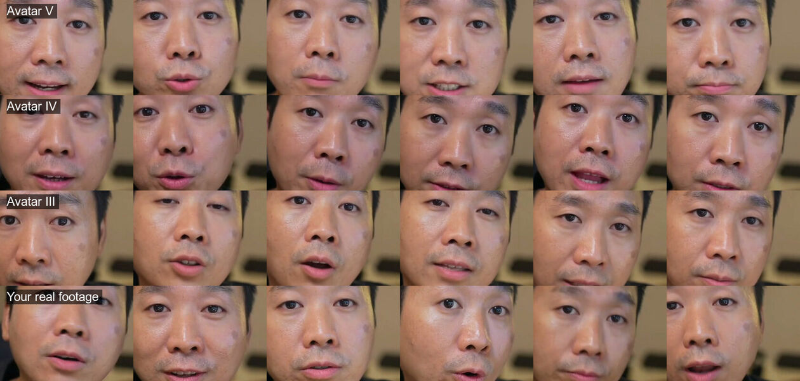

Create AI Avatar · the skill's demo
Three engines, one line.
One digital twin, trained on 2 min 48 s of real takes, saying one line in its own ElevenLabs voice. The same audio on each of HeyGen's engines, so the only difference is the engine.
Judge it by the mouth.
Six moments of each render, nose to chin, and the real footage last.

| Engine | A second | The mouth |
|---|---|---|
| Avatar V | $0.12 | Lips stretched, both rows of teeth, pinker lips |
| Avatar IV | $0.0805 | Small and round, top teeth now and then |
| Avatar III | $0.01 | Closest: small openings, natural lip colour |
Made with scripts/render.mjs and scripts/mouths.sh. An 8.8 s line cost $1.05 on Avatar V, $0.71 on IV and $0.09 on III.